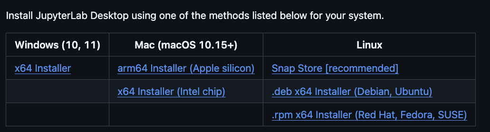
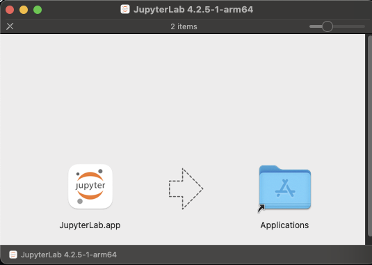

Installing JupyterLab Desktop
Last updated on 2025-10-01 | Edit this page
Overview
Questions
- What steps do I need to take to prepare for this workshop series?
- How do I install JupyterLab Desktop?
Objectives
- Download JupyterLab Desktop.
- Install JuptyterLab Desktop.
- Learn about folders and files on your computer.
- Create a folder for the Jupyter notebooks you will create during this workshop series.
Getting Started with JupyterLab Desktop
JupyterLab Desktop is a desktop application with an integrated web user interface from Project Jupyter that enables one to work with documents and activities such as Jupyter notebooks, text editors, terminals, and even custom components in a flexible, integrated, and extensible manner. Jupyter notebooks are common in data science and visualization and serve as a convenient common-denominator experience for running Python code interactively where we can easily view and share the results of our Python code.
There are other ways of editing, managing, and running code, but Jupyter notebooks let us execute and view the results of our Python code immediately within the notebook.
Why Use JupyterLab Notebooks
JupyterLab has many handy features:
- You can easily type, edit, and copy and paste blocks of code.
- Tab complete allows you to easily access the names of things you are using and learn more about them.
- It allows you to annotate your code with links, different sized text, bullets, etc. to make it more accessible to you and your collaborators.
- It allows you to display figures next to the code that produces them to tell a complete story of the analysis.
Why Run Jupyter Notebooks in JupyterLab Desktop
We use JupyterLab Desktop because it’s convenient for our learners:
- It does not require knowledge of the command line to install.
- It is available on MacOS, Windows, and Linux devices.
- It does not require users to install Python separately.
Installing JupyterLab
How you install JupyterLab Desktop will depend on your operating system.
- If you have a Mac laptop, click here.
- If you a Windows laptop, click here.
Installing JupyterLab Desktop: MacOS
Before installing JupyterLab Desktop on a Mac, you will need to know the type of processor your computer has.
Depending on when you bought your laptop, your mac may have an Apple Silicon chip or an Intel Chip. For JupyterLab Desktop to work correctly, you must install the version of the program that corresponds to the right chip.
Finding Your Processor Chip Type
- Click on the Apple icon in the top left corner of your screen.
- Select About this Mac.
- Look at the line labeled Chip.
- If your chip name begins with Apple, it is an Apple Silicon processor.
- If your chip name begins with Intel, it is an Intel processor.

Downloading Jupyter Lab
Go to the JupyterLab Installation page.

From the Mac (macOS 10.15+) column, select the download that corresponds to your chip type. Click to download the file to your computer.
Once the download has completed, double-click the .dmg file.

Drag the JupyterLab.app application to the Applications folder on the right. This will install the JupyterLab app to the Applications folder on your computer.
What Are .dmg Files?
- A *.dmg file is a disk image file, typically used to install software on MacOS.
- If you do not drag the JupyterLab app icon to your Applications folder, it will run from the .dmg file instead.
- By copying the JupyterLab app icon to the Applications folder, you tell your computer that you want the contents of the .dmg copied and installed to your Applications so that you can use the application later.
- You can delete (and eject) the .dmg file after you’ve installed JupyterLab.
When the installation has finished, close the installer window.
Installing JupyterLab Desktop: Windows
Go to the JupyterLab Installation page.
From the Windows (10, 11) column, select the x64 Installer. Click to download the file to your computer.
The Notebook has Command and Edit modes.
- If you press Esc and Return alternately, the outer border of your code cell will change from gray to blue.
- These are the Command (gray) and Edit (blue) modes of your notebook.
- Command mode allows you to edit notebook-level features, and Edit mode changes the content of cells.
- When in Command mode (esc/gray),
- The b key will make a new cell below the currently selected cell.
- The a key will make one above.
- The x key will delete the current cell.
- The z key will undo your last cell operation (which could be a deletion, creation, etc).
- All actions can be done using the menus, but there are lots of keyboard shortcuts to speed things up.
Command Vs. Edit
In the Jupyter notebook page are you currently in Command or Edit
mode?
Switch between the modes. Use the shortcuts to generate a new cell. Use
the shortcuts to delete a cell. Use the shortcuts to undo the last cell
operation you performed.
Command mode has a grey border and Edit mode has a blue border. Use Esc and Return to switch between modes. You need to be in Command mode (Press Esc if your cell is blue). Type b or a. You need to be in Command mode (Press Esc if your cell is blue). Type x. You need to be in Command mode (Press Esc if your cell is blue). Type z.
Use the keyboard and mouse to select and edit cells.
- Pressing the Return key turns the border blue and engages Edit mode, which allows you to type within the cell.
- Because we want to be able to write many lines of code in a single cell, pressing the Return key when in Edit mode (blue) moves the cursor to the next line in the cell just like in a text editor.
- We need some other way to tell the Notebook we want to run what’s in the cell.
- Pressing Shift+Return together will execute the contents of the cell.
- Notice that the Return and Shift keys on the right of the keyboard are right next to each other.
The Notebook will turn Markdown into pretty-printed documentation.
- Notebooks can also render [Markdown][markdown].
- A simple plain-text format for writing lists, links, and other things that might go into a web page.
- Equivalently, a subset of HTML that looks like what you’d send in an old-fashioned email.
- Turn the current cell into a Markdown cell by entering the Command mode (Esc/gray) and press the M key.
-
In [ ]:will disappear to show it is no longer a code cell and you will be able to write in Markdown. - Turn the current cell into a Code cell by entering the Command mode (Esc/gray) and press the y key.
Markdown does most of what HTML does.
| Markdown code | Rendered output |
|---|---|
|
|
|
|
|
|
|
A Level-1 Heading |
|
A Level-2 Heading (etc.) |
|
Line breaks don’t matter. But blank lines create new paragraphs. |
|
Links are created with
|
Creating Lists in Markdown
Create a nested list in a Markdown cell in a notebook that looks like this:
- Get funding.
- Do work.
- Design experiment.
- Collect data.
- Analyze.
- Write up.
- Publish.
This challenge integrates both the numbered list and bullet list. Note that the bullet list is indented 2 spaces so that it is inline with the items of the numbered list.
1. Get funding.
2. Do work.
* Design experiment.
* Collect data.
* Analyze.
3. Write up.
4. Publish.Change an Existing Cell from Code to Markdown
What happens if you write some Python in a code cell and then you switch it to a Markdown cell? For example, put the following in a code cell:
And then run it with Shift+Return to be sure that it works as a code cell. Now go back to the cell and use Esc then m to switch the cell to Markdown and “run” it with Shift+Return. What happened and how might this be useful?